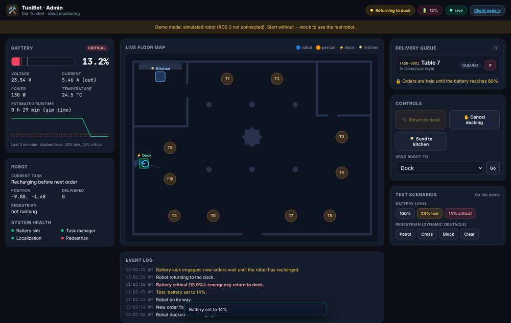

fig.01 · admin dashboard · live floor map
01 · Featured
Autonomous Waiter Robot (CSTAM-TuniBot)
A complete ROS 2 stack for an indoor delivery robot in a restaurant: SLAM mapping, AMCL localization and Nav2 navigation through narrow doorways, a delivery task queue, pedestrian avoidance, and a simulated 24 V Li-ion battery that triggers automatic return-to-dock. Guests order from a table QR code, even by voice in French, English or Tunisian derja, and follow the delivery live; staff get an admin dashboard with the live map.